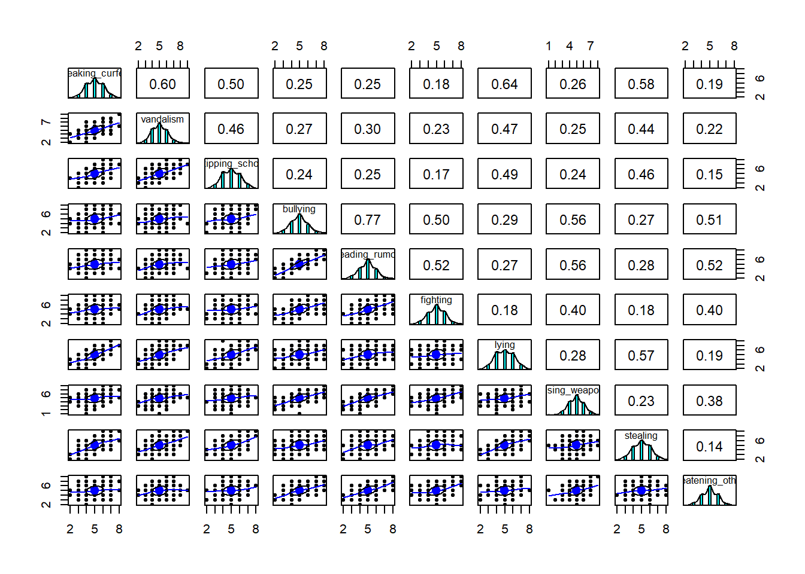
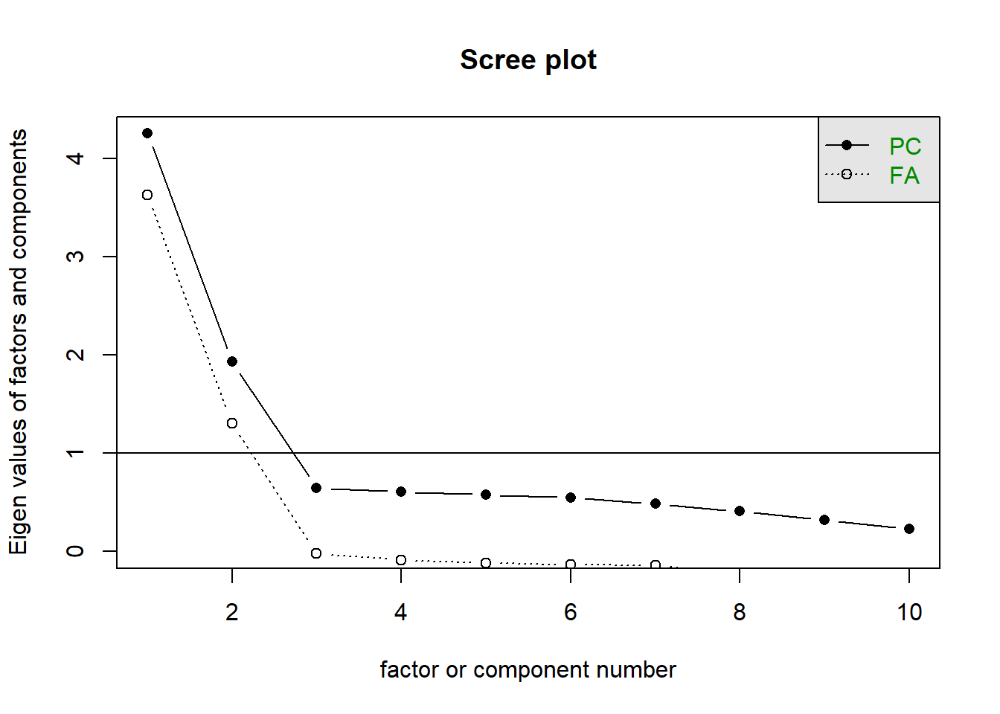

A researcher is developing a new brief measure of Conduct Problems. She has collected data from n=450 adolescents on 10 items, which cover the following behaviours:
Breaking curfew
Vandalism
Skipping school
Bullying
Spreading malicious rumours
Fighting
Lying
Using a weapon
Stealing
Threatening others
Our task is to use the dimension reduction techniques we learned about in the lecture to help inform how to organise the items she has developed into subscales.
cpdata <-read.csv("https://uoepsy.github.io/data/conduct_ninepoint.csv")# discard the first column, which only contains IDscpdata <- cpdata[,-1]
Here’s a correlation matrix visualised with heatmap(). Dark colours mean strong correlations, lighter colours mean weaker ones. Looks like we’re dealing with two obvious blocks of items here.
heatmap(cor(cpdata))
Next: Bartlett’s test checks whether our correlation matrix is different from the identity matrix (a matrix of all 0s except for 1s on the diagonal). It comes out with a p-value of 0 (which isn’t a possible p-value, so this must have been rounded down for some reason). But it’s definitely below 0.05, so we can reject the null that the correlation matrix is proportional to the identity matrix. This is good. It basically means “we have some non-zero correlations”!
Next: The KMO sampling adequacy tells us how “factorable” the correlation matrix is—how well can we take it apart into potential subfactors? The overall MSA (representing sampling adequacy) is 0.87, which is pretty good! (Or in the official terms of the KMO measure: ‘meritorious’!). And for each individual item, the MSA is above 0.8. Also good.
Finally: All the relationships here look fairly linear, which is good, because correlations are based on linear relationships.
pairs.panels(cpdata)

Question 2
How many dimensions should be retained?
This question can be answered in the same way as we did for PCA - use a scree plot, parallel analysis, and MAP test to guide you. See the brief PCA walkthrough here.
Solution 2. A scree plot shows how much variance is explained by each additional factor. The scree plot shows a kink at 3, which suggests retaining 2 components: the components before the kink.
scree(cpdata)

Solution 3. The Minimum Average Partial (MAP) test goes through all components in turn, removing each of them from the correlation matrix and seeing what impact that has on the remaining correlations. The values that it computes for each component are the “average squared partial correlation” between the remaining components.
One of the values in this list will be the smallest. That small value represents the point at which removing a component removes important shared variance, rather than removing variable-specific variance.
In short, we want to find the smallest MAP value and choose the corresponding number of factors.
I’m just extracting the actual map values here. We can see that the second entry is the smallest, so the MAP test also suggests retaining two factors.
Solution 4. Parallel analysis involves comparing the observed dataset to simulated datasets in which the variables are totally uncorrelated. We want to keep the components that look different from the simulated data.
Parallel analysis suggests two factors as well.
fa.parallel(cpdata, fa ="both")
Parallel analysis suggests that the number of factors = 2 and the number of components = 2
Solution 5. Again, a quite clear picture that two factors is preferred:
guides
suggestion
Scree
2
MAP
2
Parallel Analysis
2
Question 3
Use the function fa() from the psych package to conduct and EFA to extract two factors. (We made the choice of two factors based on the various tests above, but you might feel differently—the ideal number of factors is totally subjective!) Use a suitable rotation (rotate = ?) and extraction method (fm = ?).
Hints
Would you expect factors to be correlated? If so, you’ll want an oblique rotation.
See the readings here.
Solution 6. For example, you could choose an oblimin rotation to allow factors to correlate. Let’s use MLE as the estimator.
Each item has a clear primary loading on to one of the factors. This is even easier to see if we just pull out the loadings, because loadings below 0.3 are hidden:
The h2 column is showing that the 2 factor solution is explaining at minimu 35% of the variance in each item, often more.
The complexity for all items is 1 (meaning each item is clearly linked to just one of the factors).
Both factors are well determined, having at least 3 salient loadings.
The proportion of variance explained shows us that the two factors together explain 53% of the variance in the data. And both factors explain a similar amount: 27% for factor 1, 26% for factor 2.
We can also see that there is a moderate correlation between the two factors. Use of an oblique rotation was appropriate - if the correlation had been very weak, then it might not have differed much from if we used an orthogonal rotation.
Question 5
This is the fun part! Look back at what each item is asking about, and suggest a name for your factors based on the patterns of loadings. What underlying construct do you think each of the two factors might be picking up on?
Hints
To sort and group the loadings together in a more readable way, you can use
We can see that, ordered like this, we have five items that have high loadings for one factor and another five items that have high loadings for the other.
The five items for factor 1 all have in common that they are more aggressive kinds of misbehaviour. On the other hand, the five items for factor 2 are non-aggressive kinds of misbehaviour. We could, therefore, label our factors as ‘aggressive’ and ‘non-aggressive’ conduct problems.
Question 6
Compare three different solutions:
your current solution from the previous questions
one where you fit 1 more factor
one where you fit 1 fewer factors
Which one looks best?
Hints
We’re looking here to assess:
how much variance is accounted for by each solution
do all factors load on 3+ items at a salient level?
do all items have at least one loading at a salient level?
are there any “Heywood cases” (communalities or standardised loadings that are >1)?
should we perhaps remove some of the more complex items?
is the factor structure (items that load on to each factor) coherent, and does it make theoretical sense?
Solution 9. The 1-factor model explains 35% of the variance (as opposed to the 53% explained by the 2 factor solution), and all items load fairly high on the factor. The downside here is that we’re not discerning between different types of conduct problems that we did in the 2 factor solution.
Factor Analysis using method = ml
Call: fa(r = cpdata, nfactors = 1, fm = "ml")
Standardized loadings (pattern matrix) based upon correlation matrix
ML1 h2 u2 com
breaking_curfew 0.46 0.21 0.79 1
vandalism 0.46 0.21 0.79 1
skipping_school 0.41 0.17 0.83 1
bullying 0.82 0.68 0.32 1
spreading_rumours 0.83 0.69 0.31 1
fighting 0.58 0.34 0.66 1
lying 0.47 0.22 0.78 1
using_weapon 0.65 0.43 0.57 1
stealing 0.45 0.20 0.80 1
threatening_others 0.59 0.34 0.66 1
ML1
SS loadings 3.48
Proportion Var 0.35
Mean item complexity = 1
Test of the hypothesis that 1 factor is sufficient.
df null model = 45 with the objective function = 4.22 with Chi Square = 1876
df of the model are 35 and the objective function was 1.52
The root mean square of the residuals (RMSR) is 0.17
The df corrected root mean square of the residuals is 0.19
The harmonic n.obs is 450 with the empirical chi square 1143 with prob < 2.1e-217
The total n.obs was 450 with Likelihood Chi Square = 675 with prob < 1.8e-119
Tucker Lewis Index of factoring reliability = 0.55
RMSEA index = 0.202 and the 90 % confidence intervals are 0.189 0.215
BIC = 461
Fit based upon off diagonal values = 0.82
Measures of factor score adequacy
ML1
Correlation of (regression) scores with factors 0.94
Multiple R square of scores with factors 0.88
Minimum correlation of possible factor scores 0.76
The 3-factor model explains 58% of the variance (only 5% more than the 2-factor model). Notably, the third factor is not very clearly defined - it only has 1 salient loading (possibly 2 if we consider the 0.3 to be salient, but that item is primarily loaded on the 2nd factor).
Factor Analysis using method = ml
Call: fa(r = cpdata, nfactors = 3, rotate = "oblimin", fm = "ml")
Standardized loadings (pattern matrix) based upon correlation matrix
ML2 ML3 ML1 h2 u2 com
breaking_curfew -0.04 0.72 0.17 0.67 0.328 1.1
vandalism 0.02 0.02 0.93 0.90 0.097 1.0
skipping_school 0.03 0.53 0.11 0.39 0.606 1.1
bullying 0.87 0.03 -0.04 0.75 0.246 1.0
spreading_rumours 0.88 -0.02 0.02 0.77 0.227 1.0
fighting 0.59 -0.05 0.07 0.35 0.645 1.0
lying 0.02 0.83 -0.07 0.64 0.363 1.0
using_weapon 0.61 0.11 -0.02 0.42 0.579 1.1
stealing 0.03 0.74 -0.04 0.53 0.473 1.0
threatening_others 0.60 -0.04 0.05 0.36 0.640 1.0
ML2 ML3 ML1
SS loadings 2.65 2.14 1.01
Proportion Var 0.26 0.21 0.10
Cumulative Var 0.26 0.48 0.58
Proportion Explained 0.46 0.37 0.17
Cumulative Proportion 0.46 0.83 1.00
With factor correlations of
ML2 ML3 ML1
ML2 1.00 0.40 0.33
ML3 0.40 1.00 0.65
ML1 0.33 0.65 1.00
Mean item complexity = 1
Test of the hypothesis that 3 factors are sufficient.
df null model = 45 with the objective function = 4.22 with Chi Square = 1876
df of the model are 18 and the objective function was 0.02
The root mean square of the residuals (RMSR) is 0.01
The df corrected root mean square of the residuals is 0.02
The harmonic n.obs is 450 with the empirical chi square 5.26 with prob < 1
The total n.obs was 450 with Likelihood Chi Square = 9.69 with prob < 0.94
Tucker Lewis Index of factoring reliability = 1.01
RMSEA index = 0 and the 90 % confidence intervals are 0 0.008
BIC = -100
Fit based upon off diagonal values = 1
Measures of factor score adequacy
ML2 ML3 ML1
Correlation of (regression) scores with factors 0.95 0.93 0.95
Multiple R square of scores with factors 0.89 0.86 0.91
Minimum correlation of possible factor scores 0.79 0.71 0.81
Question 7
Write a few short paragraphs that summarises your choices, your method, and the results from your chosen optimal factor structure for the 10 conduct problems.
Hints
Write about the process that led you to the number of factors you chose. Discuss the patterns of loadings and provide definitions of the factors.
There is no one correct way to write this up!
Try thinking of it like this: If you were describing what you did to another researcher who wanted to reproduce your workflow and understand your decisions, what would you say?
Solution 10. The main principles governing the reporting of statistical results are transparency and reproducibility (i.e., someone should be able to reproduce your analysis based on your description).
An example summary would be:
First we checked whether the data were suitable for factor analysis. We checked normality using visual inspection of histograms, linearity by inspecting linear and loess lines for the pairwise associations between variables, and factorability using a KMO test, which yielded an overall KMO of \(.83\) and no variable KMOs \(<.50\).
We conducted an exploratory factor analysis to inform the structure of a new test for conduct problems. To help us decide how many factors to retain, we used a scree plot, parallel analysis (using principal components analysis; PA-PCA), and the MAP test. All three methods suggested that we retain two factors. However, we also checked a one-factor solution and a three-factor solution to confirm that the two-factor solution was indeed most appropriate. We didn’t want to risk our two-factor solution blurring important distinctions between factors, nor including a minor secondary factor that would be more sensibly combined with the primary one.
We extracted all factors using maximum likelihood estimation and (for the two- and three-factor solutions) an oblimin rotation, because we expected that the factors would be correlated.
Our two-factor solution accounted for 53% of the variance in the items. This suggests that the two-factor solution is the most effective of the three soluions we tried (the one-factor solution explained only 35% of variance, while the three-factor solution explained 58%, only 5% more than the two-factor solution). Both of the factors in the two-factor solution were well-determined, each including five loadings above 0.3, and they have a correlation of \(r=.42\).
The factor loadings above 0.3 are shown in Table 11. Based on the pattern of factor loadings, we interpreted the two factors as ‘aggressive conduct problems’ (factor ML1) and ‘non-aggressive conduct problems’ (factor ML2).
Table 1: Factor Loadings
ML1
ML2
spreading_rumours
0.88
bullying
0.87
using_weapon
0.61
threatening_others
0.60
fighting
0.59
vandalism
0.86
skipping_school
0.76
stealing
0.70
lying
0.65
breaking_curfew
0.62
The Creativity Scale
Dataset: creativity.rdata
In the lecture in Week 7, we did a very quick crowd-sourcing of “what we think ‘creativity’ is”, and then we turned these into questionnaire items, and we completed the questionnaire (well, some of us completed it!).
The data can be loaded into your R environment using:
After you run this, you should find two things in your environment:
crdat = the raw data from Qualtrics
critems = the wordings of each question. This can be useful because if you want to quickly remember what the 4th question was, you can just type critems[4] in your console and it will print it out.
Question 8
Our task is going to be to conduct EFA to explore the underlying structure of our scale. As this is a completely new scale that we have just pulled out of our hats, we will feel free to consider removing “problematic” items (and then going back to the start of the EFA process but using the reduced set).
This will involve making lots of decisions along the way.
Go through the code and jot down all the decision points, and ask yourself: 1. why did we make those decisions, and 2. what other decisions could we have made?
Solution 11.
correlations were low, overall KMO was low, and we decided to just carry on regardless. We could have stopped here and gone back to the drawing board - rewritten our items (more carefully) and collected new data.
our subjective reading of the scree plot led us to 1-3 factors. you could argue there’s a kink at the 5th point, but then you could also argue that this is all below the eigenvalue of 1. Eigenvalues below 1 are dimensions that are essentially capturing less variability in the data than a single variable would.
there were decision points when we fit the 3 models to go with principal axis factoring and to use an oblique rotation. The skew wasn’t terrible, so many researchers might not have worried too much and just gone with ML.
we viewed the 2 factor model as looking more suitable. why? the 1 factor model had a lot of items with no salient loadings. the 3 factor model had a factor (PA3) which had only 2 items with it as the primary loading (creativity_2 was cross loading on PA2 and PA3). So the third factor looked like it was under-identified. We also said that we didn’t mind about losing 7% of the variance.
A clear decision point is removal of creativity_8. There were various things that fed into this choice - it had low KMO, and low correlations, and in the factor models was not loading on to any factor apart from in the 3-factor solution, where it PA3 was defined mainly by creativity_8 and not much else. So it sort of feels like responses to this question are capturing something different from the others. In addition (and very importantly!), when we read the wording of the question, it didn’t scream “creativity”.
After removing creativity_8, most of the same decisions came all over again. We then got to the decision of creativity_5, which didn’t have a salient loading in either the 1 or 2 factor solutions. The wording of this question is more closely related to the idea of “creativity”, but perhaps it’s not worded very well. The ability to connect ideas from different areas isn’t quite the same thing as having the creative idea to do so.
finally, once we removed creativity_5, by keeping the 2-factor solution we made a decision that both of these factors represented useful aspects of “creativity”. This is actually a decision that often gets overlooked in research — we do all the stats to develop a scale and then forget to stop at the end and just think about whether what we’ve ended up with actually looks like what we wanted.2. You might look at the two sets of questions and see something else. We named our factors “novel” and “art”, and I could see a very valid argument that neither of these really capture the vague idea of what I think of as “creativity”. Artistic expression does not necessitate creativity? Nor novelty for the sake of novelty.
Footnotes
You should provide the table of factor loadings. It is conventional to omit factor loadings \(<|0.3|\); however, be sure to ensure that you mention this in a table note.↩︎
missing this step leads to the jingle-jangle fallacies, because we would now go out and tell everyone that this scale measures ‘creativity’!↩︎